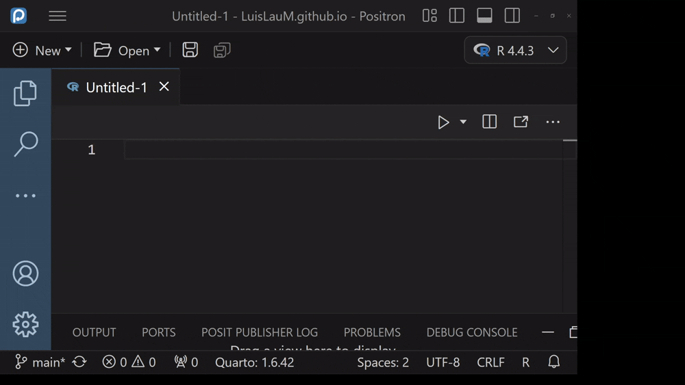

Image credits: EVBN
[EN] Converting snippets from RStudio to Positron
A brief introduction
Positron is the latest IDE released by POSIT, the owner of the very famous RStudio IDE. While its developers are making great efforts to ease the transition for current RStudio users, there are some features that have not yet been implemented and one of them is the conversion of snippets.
Snippets in RStudio are a very powerful tool as they allow users to define chunks of code that they commonly use and make them available from a nickname. For example, to generate an empty plot centered on c(1, 1) using graphics, the complete command would be as follows:
plot(x = 1, y = 1, type = "n", axes = FALSE,
xlab = NA, ylab = NA, xlim = xlim, ylim = ylim)Of course, typing all those argument definitions can be a bit cumbersome, and that’s where the snippets show their potential, allowing me to associate all that command to a nickname (called plo, for example). Then, the next time I type the command plo and press Tab, RStudio prompts me to insert the plo snippet and, when I press Tab again, it generates the desired command.
In RStudio, defining a snippet is very simple: just go to the menu Tools –> Edit code snippets and follow the established format for its definition which consists of: the command snippet, a nickname and the desired code. For example, the command to define my previous code would be the following:
snippet plot
plot(1, 1, type = "n", axes = FALSE, xlab = NA, ylab = NA, xlim = xlim, ylim = ylim)However, Positron uses a different format and allows us to add some extra fields: the name of the snippet, scope (refers to the language or context of the snippet), prefix (which is the hint with which we will call the snippet), body (the command itself, it can consist of one line or more), and description (a brief description of what our command does). So, taken to this format, our previous snippet would look like this:
"plo": {
"scope": "r",
"prefix": "plo",
"body": "plot(x = 1, y = 1, type = \"n\", axes = FALSE, xlab = NA, ylab = NA, xlim = xlim, ylim = ylim)",
"description": ""
},The format converter
Well, to switch from one format to another, I have created a small Shinyapp where you just have to paste the full text of all our snippets in RStudio format, press the Convert button and get your version in jSON format. You can access the converter through the following link.
Then, you will have to go to Positron, press the key combination Ctrl+Shift+P, type Configure snippets and then select this option.
In the same panel will be displayed several languages and platforms where it is possible to configure snippets, look for one called r.json and press Enter.
Then, in the Editor, a json format file will be opened where we will paste what was obtained by the Shinyapp converter.
That’s it! From now on, when we need a snippet in Positron, just type the corresponding prefix, then press the Tab key, then navigate with the arrow keys to our desired snippet and press the Tab key to select it.

So far, for multi-line snippets, Positron does not apply the proper indentation at the time of submission, so we will have to complete this process manually. Hopefully the POSIT team will be able to resolve this issue soon.
[ES] Convertir snippets de RStudio a Positron
Una breve introducción
Positron es el último IDE lanzado por POSIT, la dueña del tan famoso IDE RStudio. Si bien sus desarrolladores están haciendo grandes esfuerzos para facilitar la transición por parte de los actuales usuarios de RStudio, existen algunas funcionalidades que aún no ha sido implementadas y una de ellas es la de la conversión de los snippets.
Los snippets en RStudio son una herramienta muy poderosa ya que permite a los usuarios definir trozos de código que suelen utilizar y hacerlos disponibles a partir de un nickname. Por ejemplo, para generar un plot vacío centrado en c(1, 1) usando graphics, el comando completo sería el siguiente:
plot(x = 1, y = 1, type = "n", axes = FALSE,
xlab = NA, ylab = NA, xlim = xlim, ylim = ylim)Por supuesto, escribir todas esas definiciones de argumentos puede ser algo engorroso, y es ahí en donde los snippets demuestran su potencial, permitiendo que yo pueda asociar todo ese comando a un nickname (llamado plo, por ejemplo). Entonces, la próxima vez que escriba el comando plo y presione la tecla Tab, RStudio me sugiere insertar el snippet plo y, al volver a presionar Tab, genera el comando deseado.
En RStudio, definir un snippet es muy sencillo: basta con ir al menú Tools –> Edit code snippets y seguir el formato establecido para su definición que consiste en: el comando snippet, un nickname y el código deseado. Por ejemplo, el comando para definir mi anterior código sería el siguiente:
snippet plot
plot(1, 1, type = "n", axes = FALSE, xlab = NA, ylab = NA, xlim = xlim, ylim = ylim)Sin embargo, Positron utiliza un formato distinto y permite añadir algunos campos extra: el nombre del snippet, scope (hace referencia al lenguaje o contexto del snippet), prefix (que es la pista con la que llamaremos al snippet), body (el comando en sí, puede constar de una línea o más), y description (una breve descripción de lo que nuestro comando hace). Entonces, llevado a este formato, nuestro anterior snippet luciría así:
"plo": {
"scope": "r",
"prefix": "plo",
"body": "plot(x = 1, y = 1, type = \"n\", axes = FALSE, xlab = NA, ylab = NA, xlim = xlim, ylim = ylim)",
"description": ""
},El convertidor de formatos
Pues bien, para pasar de un formato a otro, he creado un pequeño Shinyapp en donde basta con pegar el texto completo de todos nuestros snippets en formato RStudio, presionar el botón Convert y obtener lsu versión en formato jSON. Puedes acceder al convertidor a través del siguiente link.
Luego, deberás ir a Positron, presionar la combinación de teclas Ctrl+Shift+P, escribir Configure snippets y luego seleccionar esta opción.
En el mismo panel se mostrarán diversos lenguajes y plataformas en donde es posible configurar snippets, buscar uno llamado r.json y dar Enter.
En seguida, en el Editor se abrirá un archivo de formato json en donde pegaremos lo obtenido por el convertidor Shinyapp.
¡Listo! Desde ahora, cuando necesitemos un snippet en Positron, bastará con digitar el prefijo correspondiente, luego la tecla Tab, luego navegar con las teclas direccionales a nuestro snippet deseado y tecla Tab para seleccionarlo.
Hasta el momento, para los snippets conformados por varias líneas, al momento de presentarse Positron no aplica la sangría adecuada, por lo que tendremos que completar este proceso manualmente. Esperemos que el equipo de POSIT pueda resolver este detalle pronto.